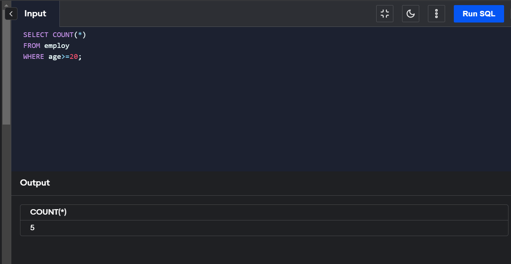
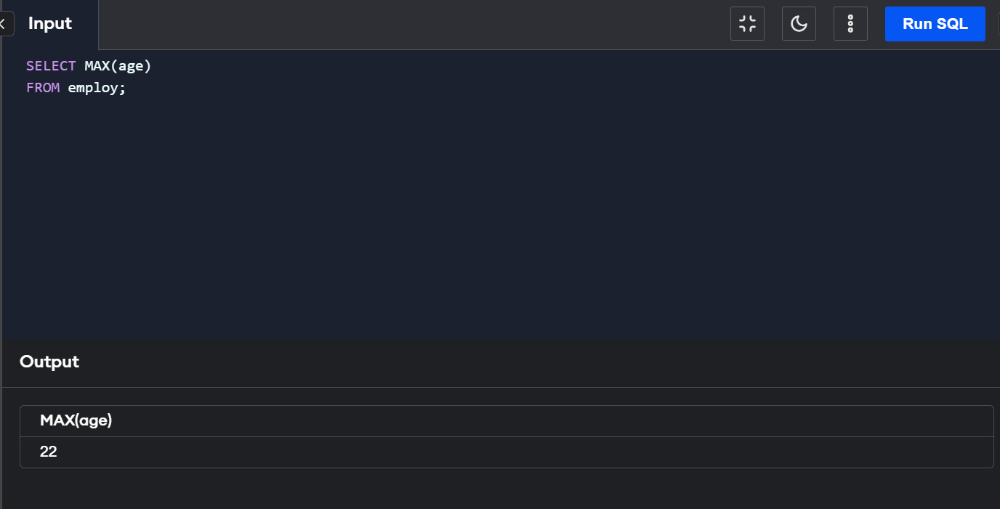
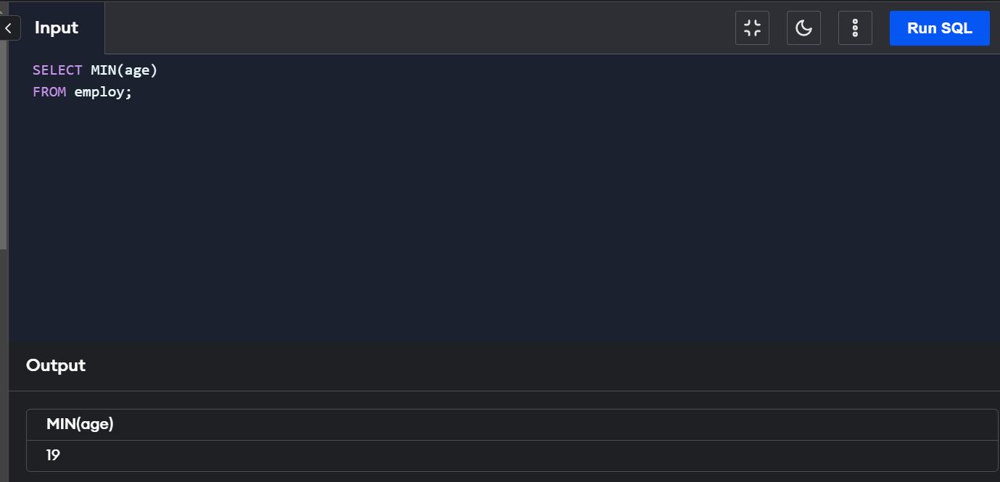

An aggregate function in SQL performs a calculation on multiple values and returns a single value. SQL provides many aggregate functions that include avg, count, sum, min, max, etc. An aggregate function ignores NULL values when it performs the calculation, except for the count function. An aggregate function in SQL performs a calculation on multiple values and returns a single value. SQL provides many aggregate functions that include avg, count, sum, min, max, etc. An aggregate function ignores NULL values when it performs the calculation, except for the count function. Various types of SQL aggregate functions are: 1.Count() 2.Sum() 3.Avg() 4.Min() 5.Max()
The COUNT() function returns the number of rows in a database table.
COUNT(*) or COUNT( [ALL|DISTINCT] expression )
The SUM() function returns the total sum of a numeric column.
SUM() or SUM( [ALL|DISTINCT] expression )
The AVG() function calculates the average of a set of values.
AVG() or AVG( [ALL|DISTINCT] expression )
The MIN() aggregate function returns the lowest value (minimum) in a set of non-NULL values.
MIN() or MIN( [ALL|DISTINCT] expression )
The MAX() aggregate function returns the highest value (maximum) in a set of non-NULL values.
AVG() or AVG( [ALL|DISTINCT] expression )   